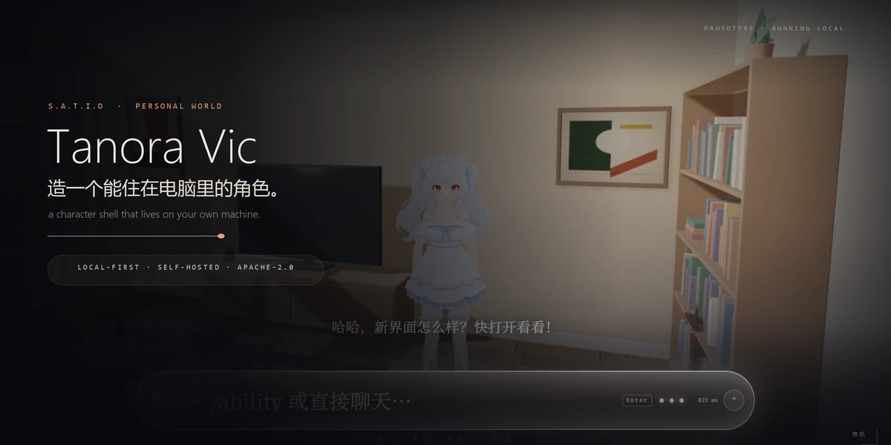
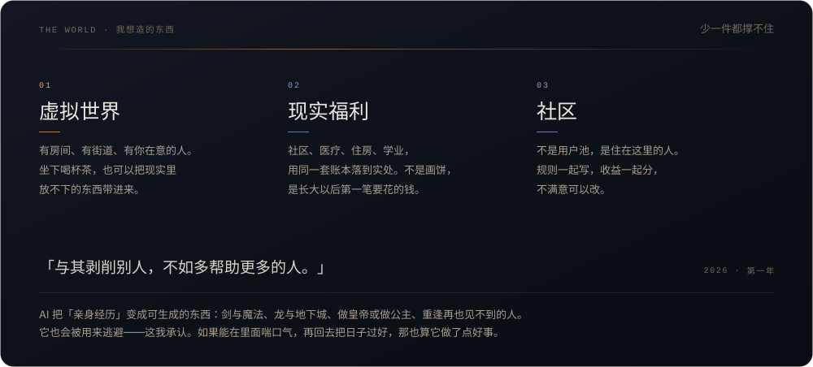
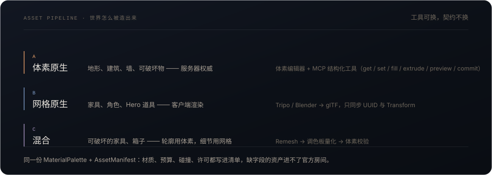
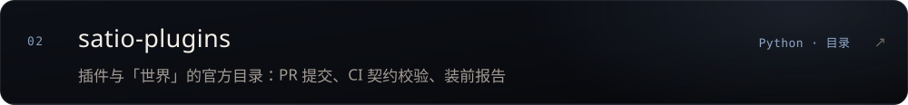
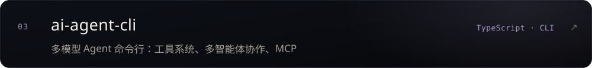
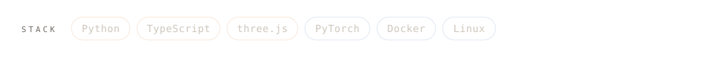

Tanora001 / README.md

你好，我是 Tanora Vic。
我在做一件很具体的事：让一个角色住在你自己的电脑里 —— 有房间、有声音、有情绪，也能顺手替你干活。模型跑在本机，密钥不出门；没有模型时它退化成 mock，不假装自己很聪明。
上面那张不是渲染图，是刚跑起来的窗口截图：她站在黄昏的客厅里，底下那枚胶囊是跟她说话的地方。
我想造的东西

世界怎么被造出来


材质映射台：把外部资产的材质自动对到自家调色板，拿不准就标「待确认」，但不阻断导入。
跑起来的样子

Panopticon：模型插槽、记忆编队、插件市场，全在一块屏上；只读，不写。
一些数字


在做的事



技术栈

在意的三件事
本机优先 —— 对话、语音、记忆都留在自己的机器上。自托管不是口号，是默认路径。
契约，不是硬编码 —— 插件、世界、能力都走同一份契约；加一样东西不用改内核。
不表演 —— 能力边界写清楚：能做什么、不能做什么，宁可少说也不装会。
最近在折腾
- 3D 客厅里的 VRM 角色与动作 —— three.js r180，先跑通观感，再谈真实模型
- 语音：GPT-SoVITS v5turbo，首包压到 1 秒级，音色与情绪分开调
- 插件市场与「装前契约报告」：先看清一个包要动什么，再决定装不装
代码 Apache-2.0 · 文字与设定 CC BY-NC 4.0 · 想商用，欢迎先来聊一声